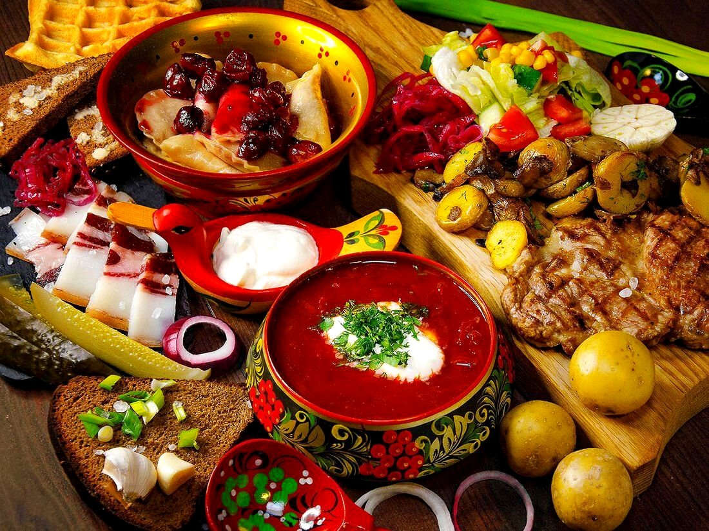
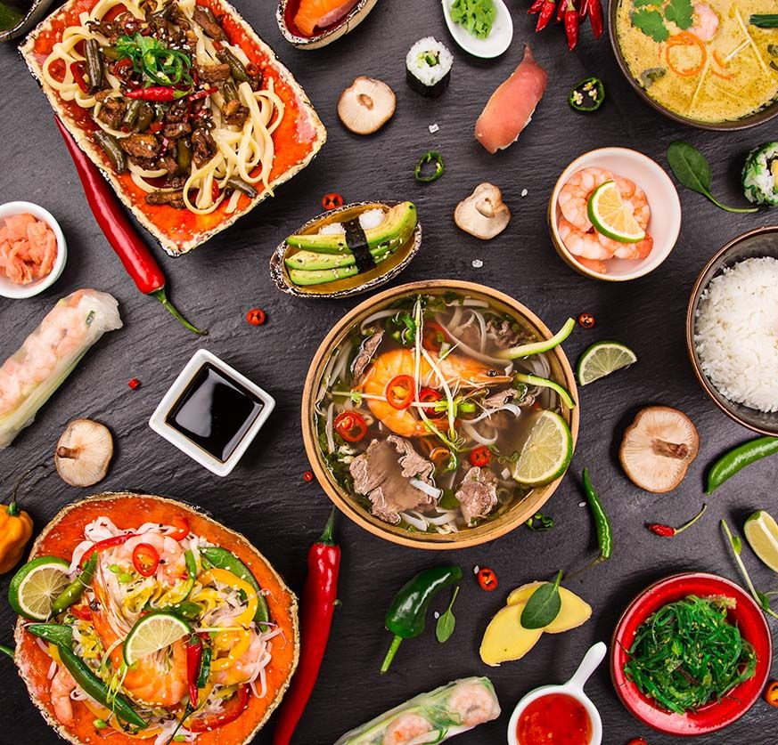
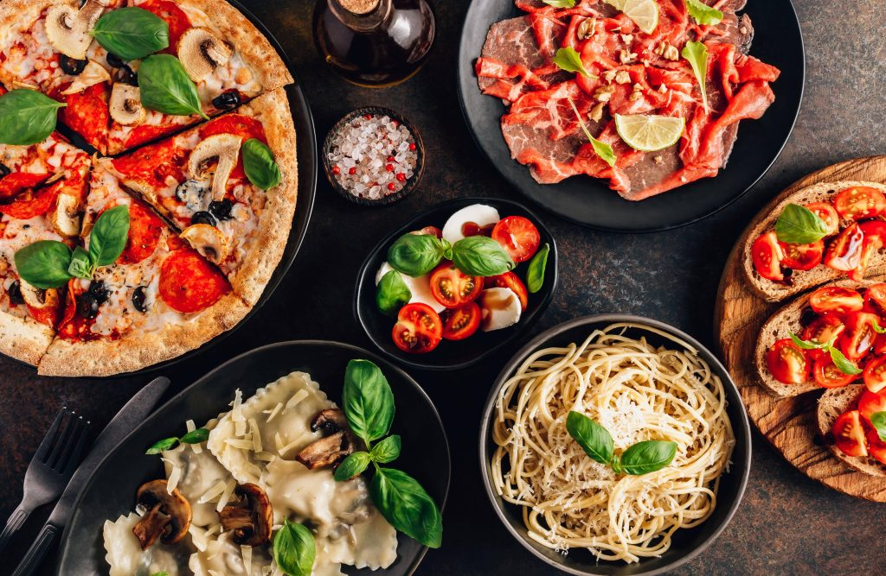
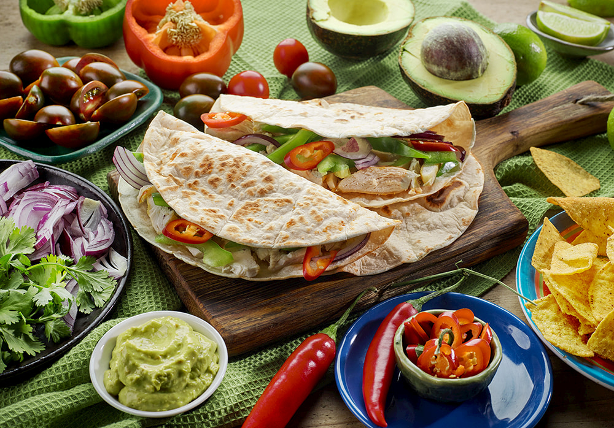
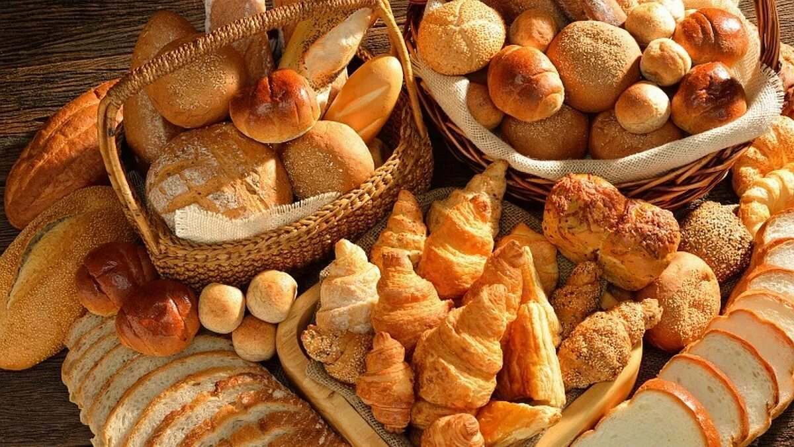

Добро пожаловать на мой блог
Рецепты и советы по кулинарии
Рецепты и советы по кулинарии
Здесь вы найдете разнообразные рецепты, интересные истории и старинные традиции русской кухни. Я поделюсь секретами приготовления любимых блюд, расскажу о происхождении популярных угощений и о том, как вкусы нашей кухни отражают культуру и душу России. Приглашаю вас отправиться в это вкусное путешествие вместе со мной!


Продолжая наше гастрономическое путешествие, перенесемся на Восток — в удивительный мир азиатской кухни. Здесь каждая страна имеет свои секреты и философию приготовления: баланс вкусов, свежие ингредиенты и уважение к традициям. От острого тайского карри до нежных японских суши — я откройю для вас восточную гармонию вкуса.
А теперь окунемся в солнечную Италию, где еда — это язык любви. Итальянская кухня вдохновляет своей простотой и изяществом: свежие травы, оливковое масло и душевный подход к каждому блюду. Пицца, паста и десерты здесь превращаются в настоящее искусство, объединяя за столом семью и друзей.


Наш путь продолжается в Мексику — страну ярких красок и насыщенных ароматов. Здесь на каждом углу готовят тако, буррито и энчиладас, наполняя воздух запахами лайма и пряностей. Мексиканская кухня — это праздник вкуса, где каждая специя рассказывает свою историю.
И наконец, сладкое завершение нашего путешествия — мир ароматной выпечки и десертов. Нежные пирожные, хрустящие булочки и домашние торты создают атмосферу уюта и тепла. Ведь каждая кухня мира, будь то русская, итальянская или мексиканская, всегда завершается чем-то сладким — как напоминание о том, что еда это радость.
